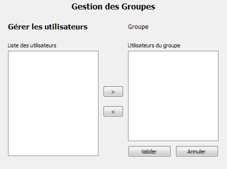

Documentation client
Administration : groupes
L'interface de gestion des groupes permet aux administrateurs de créer, modifier et supprimer des groupes ainsi que de choisir les utilisateurs appartenant à un groupe et les mots de passe accessibles à un groupe.
Les boutons de modification, suppression, gestion des utilisateurs et gestion des mots de passe d'un groupe s'activent lors de la sélection d'un groupe dans la liste..
Créer ou modifier un groupe
Lors de la création d'un groupe, le nom est demandé.
Lors de la modification d'un groupe sélectionné dans la liste, le nom est renseigné et peut être modifié.
Les interfaces de création et de modification d'un groupe sont identiques.
Supprimer un groupe
Lors de la suppression d'un groupe sélectionné dans la liste, ses informations sont supprimées de la base de données ainsi que ses liaisons éventuelles avec des utilisateurs et mots de passe.
Gérer les utilisateurs d'un groupe
La gestion des utilisateurs du groupe sélectionné permet de choisir quels utilisateurs appartiennent au groupe, et donc indirectement à quels mots de passe ils auront accès.
L'interface présente la liste des utilisateurs du système à gauche, et la liste des utilisateurs du groupe à droite. Un utilisateur apparaissant dans la liste de droite n'apparait pas dans la liste de gauche.
Le bouton ">" permet d'ajouter l'utilisateur sélectionné dans la liste de gauche aux utilisateurs du groupe.
Le bouton "<" permet d'enlever l'utilisateur sélectionné dans la liste de droite des utilisateurs du groupe.

Gérer les mots de passe d'un groupe
La gestion des mots de passe du groupe sélectionné permet de choisir quels mots de passe appartiennent au groupe, et donc à quels mots de passe les utilisateurs de ce groupe auront accès.
L'interface présente la liste des mots de passe du système à gauche, et la liste des mots de passe du groupe à droite. Un mot de passe apparaissant dans la liste de droite n'apparait pas dans la liste de gauche.
Le bouton ">" permet d'ajouter le mot de passe sélectionné dans la liste de gauche aux mots de passe du groupe.
Le bouton "<" permet d'enlever le mot de passe sélectionné dans la liste de droite des mots de passe du groupe.